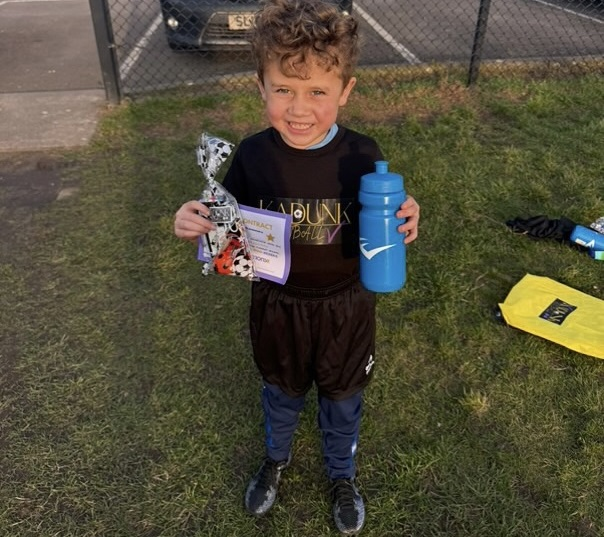
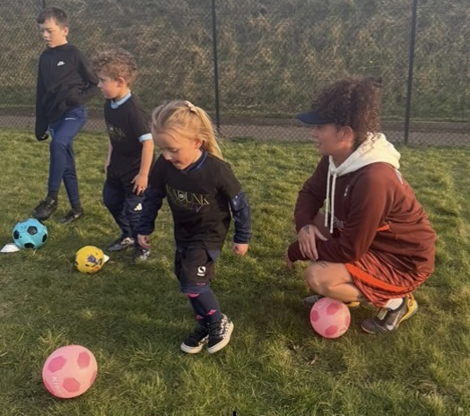
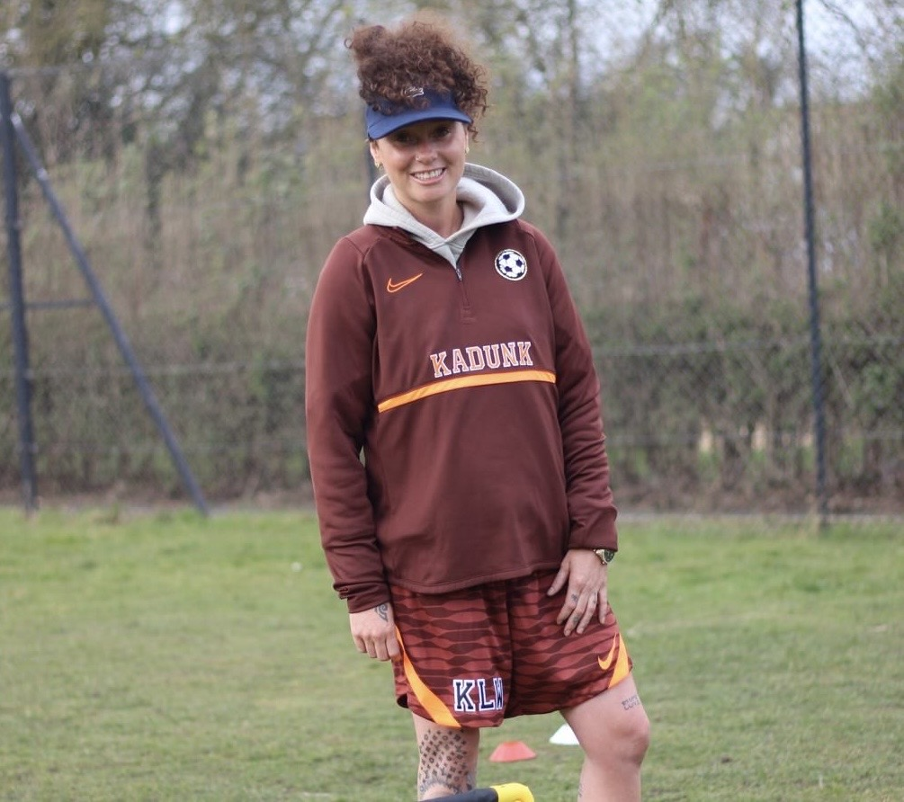

Explore our fun, friendly football sessions in Nottingham designed to build confidence, boost skills, and keep kids active and smiling every step of the way.
See Our Classes
Stay up to date with our latest news and updates:
Visit our Instagram →
Engaging football camps to keep your child active during school breaks.

Join our community events and enjoy football, fun, and celebrations for all ages.
Join us on Facebook →At Kadunk, football should be FUN. We’ve built a community where children can laugh, learn, and grow through the game — no pressure, just great energy and development.
We started in 2025 with one simple idea — football should be FUN. Based in Nottingham,
we run high-energy sessions for children aged 1–14. Whether it’s their first kick or they’re already football-mad,
every child is welcome.
Our friendly coaches and mentors create a space where kids can laugh, play, and grow in confidence — no pressure, just good vibes and great football.
We’re here to build confidence, big smiles, and a love for the game.
We teach football skills, but just as importantly, we want every child to leave feeling proud, happy,
and more confident than when they arrived.
When kids enjoy what they’re doing, that’s when the real magic happens ✨
No shouting. No pressure. No “win at all costs.”
Just energy, encouragement, and learning through play.
We focus on helping kids improve naturally — more touches, better skills, smarter decisions —
all while having an absolute blast.
Think games, challenges, laughs, and lots of “did you see that?!” moments 😄
Every child matters. Always.
We create a safe, welcoming, and inclusive environment where kids can be themselves and grow at their own pace.
No comparisons, no pressure — just support, encouragement, and celebrating every little win.
Because here, every child is a champion 🏆
We currently coach children from ages 1 to 14 years. We are also excited to be expanding soon to offer adult disability sessions, as well as SEN classes for children.
Our sessions currently take place outdoors at Woodthorpe Park, Vernon Park, and Killisick Park. We also offer 1-to-1 sessions with Coach Kate at Valley Road Park.
Children should wear football boots and shin pads. Please also ensure they are dressed comfortably and appropriately for the weather. Don’t forget to bring a drink!
Yes — parents or guardians must remain at the field while their child is taking part in the session.
Absolutely! All Kadunk coaches are FA qualified and DBS checked ✅
Yes, we offer 1-to-1 sessions for players who want extra support or to develop specific skills. These sessions are run by Coach Kate at Valley Road Park.
You can get in touch with us directly to book a session or to find out more information.
📧 kadunkfootball@gmail.com
No problem at all! Our sessions are designed to be fun, welcoming, and inclusive for all abilities. Whether your child is a complete beginner or already loves football, our coaches will support them, build their confidence, and help them develop at their own pace.